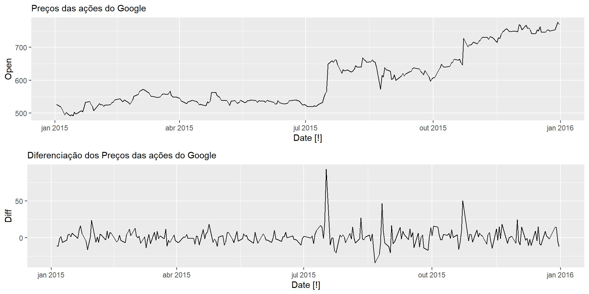
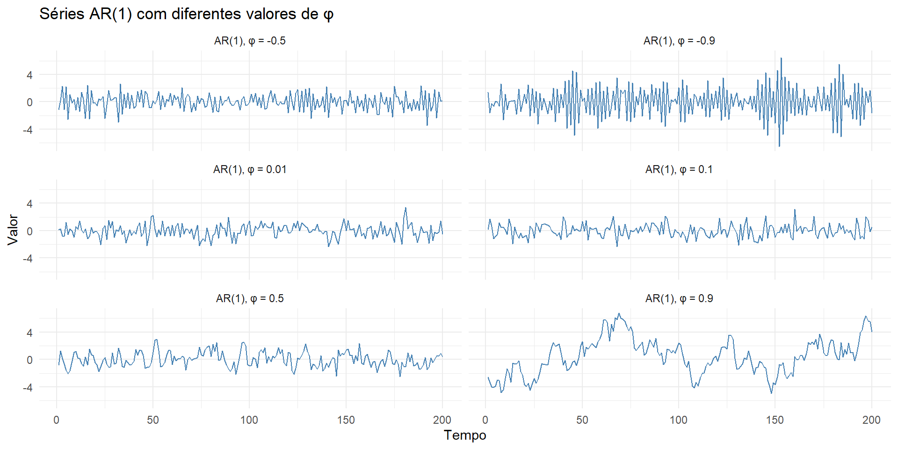

kpss_stat kpss_pvalue
2.102721 0.010000 kpss_stat kpss_pvalue
0.03973563 0.10000000 Universidade Estadual da Paraíba
Definição: Um processo estocástico \(Z=\{Z(t), t \in \tau\}\)$ diz-se estritamente estacionário se todas as distribuições finito-dimensionais permanecem as mesmas sob translações no tempo, ou seja,
\[ F\left(z_1, \ldots, z_n ; t_1+\tau, \ldots, t_n+\tau\right)=F\left(z_1, \ldots, z_n ; t_1, \ldots, t_n\right) \]
para quaisquer \(t_1, \ldots, t_n, \tau\).
Isto significa, em particular, que todas as distribuições unidimensionais são invariantes sob translações do tempo, logo a média \(\mu(t)\) e a variância \(V(t)\) são constantes, isto é,
\[ \mu(t)=\mu, \quad V(t)=\sigma^2, \]
para todo \(t \in \tau\). Sem perda de generalidade, podemos supor que \(\mu=0\); caso contrário, considere o processo \(\{Z(t)-\mu\}\).
Em várias situações práticas, vamos ter que lidar com séries não estacionárias.
É bastante comum, por exemplo, em séries econômicas e financeiras a presença de tendências de longos períodos ou curtos períodos (o que geralmente caracteriza uma mudança de nível).
Os modelos ARMA assumem como pressupostos que o processo é estacionário.
Assim, vamos ter que “tratar” a não estacionariedade das séries através de transformações.
A transformação mais comum seria tomar diferenças sucessivas da série original, até obter uma série estacionária.
O operador diferença ( \(\Delta\) ) de primeira ordem pode ser definido como
\[ \Delta Z_t = Z_t - Z_{t-1} \]
a segunda diferença é
\[ \Delta^2Z_t = \Delta[ \Delta Z_t ] = \Delta [ Z_t - Z_{t-1} ] \]
De modo geral, a n-ésima diferença de \(Z_t\) é
\[ \Delta^n Z_t = \Delta[ \Delta^{n-1} Z_t ] \]
Na prática, é comum tomar uma ou duas diferenças para tornar a série temporal estacionária.
Uma maneira de determinar mais objetivamente se a diferenciação é necessária é usar um teste de raiz unitária .
Estes são testes estatísticos de hipóteses de estacionariedade que são projetados para determinar se a diferenciação é necessária.
Para verificar se uma série é estacionária, vamos usar o teste de Kwiatkowski-Phillips-Schmidt-Shin (KPSS) ( Kwiatkowski et al., 1992 ) .
Neste teste, a hipótese nula é que os dados são estacionários, e procuramos evidências de que a hipótese nula é falsa. Consequentemente, pequenos valores de p-value (por exemplo, menos de 0,05 ou 0,01) sugerem que a diferenciação é necessária. O teste pode ser calculado usando a função do R unitroot_kpss().
Carregando os pacotes:
Obtendo os dados
google_2015 <- gafa_stock %>%
filter(Symbol == "GOOG", year(Date) == 2015)
p1 = google_2015 %>%
autoplot( ) + labs(subtitle = "Preços das ações do Google")
p2 = google_2015 %>%
mutate( Diff = difference(Close) ) %>%
select( Date, Diff ) %>%
autoplot( ) + labs(subtitle = "Diferenciação dos Preços das ações do Google")Séries dos preços das ações do google no ano de 2015 e sua respectiva diferenciação.
Usando a função unitroot_kpss para testar se existe estacionariedade na serie
# A tibble: 1 × 3
Symbol kpss_stat kpss_pvalue
<chr> <dbl> <dbl>
1 GOOG 3.56 0.01# A tibble: 1 × 3
Symbol kpss_stat kpss_pvalue
<chr> <dbl> <dbl>
1 GOOG 0.0989 0.1Portanto, através do teste da raiz unitária, podemos concluir que a propriedade de estacionariedade da série é alcançada com apenas uma diferenciação.
Assim como a correlação mede a extensão de uma relação linear entre duas variáveis, a autocorrelação mede a relação linear entre os valores defasados de uma série temporal.
Existem vários coeficientes de autocorrelação, correspondentes a cada linha vertical no gráfico dos lags. Por exemplo, \(r_1\) mede a relação entre \(y_t \text{ e } y_{t-1}, r_2\) mede a relação entre \(y_t \text{ e } y_{t-2}\), e assim por diante.
O valor de \(k\) pode ser escrito como
\[ r_k=\frac{\sum_{t=k+1}^T\left(y_t-\bar{y}\right)\left(y_{t-k}-\bar{y}\right)}{\sum_{t=1}^T\left(y_t-\bar{y}\right)^2}, \]
Onde \(T\) é o comprimento da série temporal. Os coeficientes de autocorrelação compõem a função de autocorrelação ou ACF.
Em um modelo de regressão múltipla, predizemos a variável de interesse usando uma combinação linear de preditores (covariáveis).
Em um modelo de “Auto-regressão”, prevemos a variável de interesse usando uma combinação linear de valores passados da própria variável.
Definição: Um modelo autoregressivo de ordem \(p\) pode ser escrito como:
\[ y_t= \alpha +\phi_1 y_{t-1}+\phi_2 y_{t-2}+\cdots+\phi_p y_{t-p}+w_t \]
em que \(w_t\) é um ruído branco Gaussiano com média zero e variância \(\sigma^2_w\), \(\phi_1, \ldots, \phi_p\) são constantes, \(y_{t-1}, \ldots, y_{t-p}\) são os valores das séries defasadas no tempo e \(\alpha = \mu( 1 - \phi_1 - \cdots - \phi_p )\).
É bastante comum escrever a equação anterior usando o operador diferença da seguinte forma:
\[ \left( 1 - \phi_1 B - \phi_2 B^2 - \cdots - \phi_p B^p \right) y_t = w_t, \]
ou de forma mais compacta como
\[ \phi( B ) y_t = w_t, \]
em que \(\phi(B) =\left( 1 - \phi_1 B - \phi_2 B^2 - \cdots - \phi_p B^p \right)\).
OBS: um modelo autorregressivo de ordem \(p\) é denominado como \(\operatorname{AR}(p)\).
Os modelos autoregressivos podem modelar vários comportamento de séries temporais.
Os modelos autorregressivos são restritos a dados estacionários, caso em que algumas restrições nos valores dos parâmetros são necessárias.
Para um modelo AR(1): \(-1<\phi_1<1\).
Para um modelo AR(2): \(-1 < \phi_2 < 1\), \(\phi_1+\phi_2<1\) e \(\phi_2-\phi_1 < 1\)
Quando \(p \geq 3\), as restrições são muito mais complicadas.
Uma alternativa aos processos autoregressivos, é o modelo Médias Móveis de ordem \(q\) ( Moving Average - MA(\(q\)) ). Seja \(w_t\) um ruído branco gaussiano ( \(w_t \sim RB( 0, \sigma^2_w )\) ), então definimos um processo de médias movéis de ordem \(q\) como:
\[ y_t= w_t +\theta_1 w_{t-1}+\theta_2 w_{t-2}+\cdots+\theta_q w_{t-q}, \]
em que \(q\) são os lags no processo MA e \(\theta_1, \ldots, \theta_q\) são os parâmetros do modelo. Usando o operador de médias móveis
\[ \theta(B) = 1 + \theta_1 B + \theta_2 B^2 + \cdots + \theta_q B^q \]
Podemos escrever o processo MA(\(q\)) da seguinte forma:
\[ y_t = \theta (B) w_t. \]
Uma série temporal \(y_t\) é um processo ARMA(\(p, q\)) se é estacionário e
\[ \small y_t = \alpha +\phi_1 y_{t-1}+\cdots+\phi_p y_{t-p}+ w_t +\theta_1 w_{t-1}+\cdots+\theta_q w_{t-q}, \]
em que \(\phi_p \neq 0\), \(\theta_q \neq 0\) e \(\sigma^2_w > 0\). Os parâmetros \(p\) e \(q\) são as ordens dos modelos autoregressivo e médias móveis, respectivamente.
Em particular, o modelo ARMA(\(p, q\)) pode ser escrito de forma concisa como:
\[ \phi(B) y_t = \theta (B) w_t \]
esse é um processo causal e invertível.